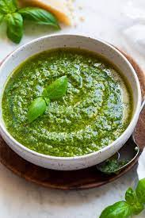

Description
Step by Step process on how to make fabolous pesto sauce
Ingredients
- 2 cups fresh basil leaves
- 1/2 cup freshly grated Romano or Parmesean cheese
- 1/2 cup extra virgin olive oil
- 1/3 cup pine nuts
- 3 cloves garlic minced (about 1 tablespoon)
- 1/4 teaspoon salt
- 1/8 teaspoon freshly ground black pepper
Steps
- Pulse basil leaves and pine nuts down in food processor
- Add garlic and cheese and pulse down several times more
- Slowly pour in olive oil in a steady small stream
- Season the pesto sauce